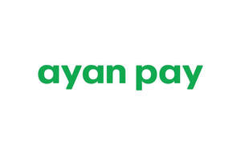

Trade Mark Journal No.2025/030 25 July 2025
UK00004197614 1 May 2025 (35,36)

- Class 35
- Promoting the goods and services of others over the Internet; Promoting the goods and services of others through advertisements on Internet websites; Business administration services for processing sales made on the internet; Business administration services for the processing of sales made on the Internet; Promoting the goods and services of others; Advertising services relating to financial services; Financial marketing; Advertising, marketing and promotion services; Marketing, advertising and promotion services; Retail services in relation to vehicles; Retail services in relation to bicycles; Retail services in relation to smartphones; Retail services in relation to car accessories; Sales promotions at point of purchase or sale, for others; Sales promotion services; Sales promotion for others; Advertising services for the promotion of e-commerce; Retail service connected with the sale of vehicles via a dealership; Retail services relating to automobile accessories; Retail services relating to automobile parts.
- Class 36
- Payment processing; E-wallet payment services; Payment transaction card services; Payment card services; Automated payment; Bill payment services; Credit card payment services; Payment processing services; Credit card payment processing; Electronic payment services; On-line bill payment services; Processing of debit card payments; Financial payment services; Automated payment services; Processing of credit card payments; Processing of payment transactions via the Internet; Payment administration services; Financial transfers and transactions, and payment services; Electronic commerce payment services; Processing of electronic payments; Electronic processing of payments; Collection of payments; Bank card, credit card, debit card and electronic payment card services; Banking services relating to the acceptance of fixed interval installment payments; Credit card transaction processing services; Bill payment services provided through a website; Instalment credit financing; Electronic credit card transaction processing; Electronic debit transactions; Electronic credit card transactions; Instalment loan financing; Instalment loan services; Credit and loan services; Automated banking services relating to credit card transactions; Credit card and debit card services; Mortgage financing services; Financing and loan services; Provision of instalment loans; Financing of purchases; Loans [financing]; Loan financing; Lease-purchase financing; Financing of investments; Credit financing; Hire-purchase financing; Project financing; Financing of acquisitions; Lease- purchase financing services; Financing services; Automobile lease-purchase financing; Providing financing; Financing of home loans; Sales credit financing; Automobile lease financing; Financing of lease purchase; Banking and financing services; Auto financing services; Financing of property development; Lease purchase financing of vehicles; Financing (Hire purchase -); Retail financing services; Financing of consumer purchases; Financing relating to automobiles; Hire purchase financing services; Lease-purchase loans; Provision of finance for leasing; Facilitating and arranging financing; Lease purchase finance; Arranging for financing of insurance premiums; Provision of finance for equipment leasing; Provision of finance for credit sales; Arranging the finance for home loans; Arranging finance for construction projects; Project finance; Providing finance for credit sales; Arranging the provision of finance for construction operations; Provision of finance for the purchase of vehicles; Lending and loans services; Arranging finance for businesses; Provision of finance for sales; Provision of finance; Finance (Provision of -); Provision of finance for hire-purchase; Credit leasing; Provision of commercial finance; Provision of finance for trade credit; Loan services for property investment; Arranging of finance; Provision of equipment finance; Instalment loans; Arranging instalment loans; Installment loans; Provision of credit through instalment plans; Collection of credit sales; Financing of personal loans; Financial credit services; Consumer lending services; Financial loan services; Financial transactions via blockchain.
AYAN CAPITAL LTD